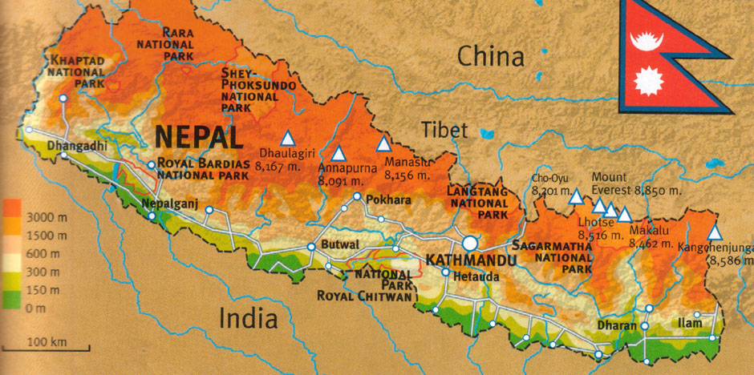

Nepal

Geography
A landlocked country the size of Arkansas, lying between India and the Tibetan Autonomous Region of China, Nepal contains Mount Everest (29,035 ft; 8,850 m), the tallest mountain in the world. Along its southern border, Nepal has a strip of level land that is partly forested, partly cultivated. North of that is the slope of the main section of the Himalayan range, including Everest and many other peaks higher than 8,000 m.
Government
In Nov. 1990, King Birendra promulgated a new constitution and introduced a multiparty parliamentary democracy in Nepal. Under pressure amid massive pro-democracy protests in April 2006, King Gyanendra gave up direct rule and reinstated Parliament, which then quickly moved to diminish the King's power. In Dec. 2007, Parliament voted to abolish the monarchy and become a federal democratic republic. The transition to a republic was completed in May 2008, when the Constituent Assemby voted to dissolve the monarchy.
History
The first civilizations in Nepal, which flourished around the 6th century B.C. , were confined to the fertile Kathmandu Valley where the present-day capital of the same name is located. It was in this region that Prince Siddhartha Gautama was born c. 563 B.C. Gautama achieved enlightenment as Buddha and spawned Buddhism.
Nepali rulers' early patronage of Buddhism largely gave way to Hinduism, reflecting the increased influence of India, around the 12th century. Though the successive dynasties of the Gopalas, the Kiratis, and the Licchavis expanded their rule, it was not until the reign of the Malla kings from 1200–1769 that Nepal assumed the approximate dimensions of the modern state.
The kingdom of Nepal was unified in 1768 by King Prithvi Narayan Shah, who had fled India following the Moghul conquests of the subcontinent. Under Shah and his successors, Nepal's borders expanded as far west as Kashmir and as far east as Sikkim (now part of India). A commercial treaty was signed with Britain in 1792 and again in 1816 after more than a year of hostilities with the British East India Company.
The Independence of Nepal and the First Free Election
In 1923, Britain recognized the absolute independence of Nepal. Between 1846 and 1951, the country was ruled by the Rana family, which always held the office of prime minister. In 1951, however, the king took over all power and proclaimed a constitutional monarchy. Mahendra Bir Bikram Shah became king in 1955. After Mahendra died of a heart attack in 1972, Prince Birendra, at 26, succeeded to the throne.
In 1990, a pro-democracy movement forced King Birendra to lift the ban on political parties. The first free election in three decades provided a victory for the liberal Nepali Congress Party in 1991, although the Communists made a strong showing. A small but growing Maoist guerrilla movement, seeking to overthrow the constitutional monarchy and install a Communist government, began operating in the countryside in 1996.
On June 1, 2001, King Birendra was shot and killed by his son, Crown Prince Dipendra. Angered by his family's disapproval of his choice of a bride, the crown prince also killed his mother and several other members of the royal family before shooting himself. Prince Gyanendra, the younger brother of King Birendra, was then crowned king.
My biography
I am Roshan Thapaliya. I am Junior Computer Science major at Howard University. I am from Nepal.
Favorite Links
https://www.youtube.com/
I like to spend my free time watching videos on YouTube.
http://www.ronaldo7.net/
I visit this link to watch live soccer games.
http://www.livescores.com/
I visit this link to get live score updates for soccer games.
http://techcrunch.com/
I visit this link to be updated with tech news.
https://projecteuler.net/
I like to solve the coding problems on project euler using Python.